Hace mucho tiempo escribí un ridículo script web. La idea es un portal orientado a formar una comunidad social para compartir música, y ser reconocido por tus aportes dentro de la comunidad.

Su nombre es SapoMusic y funciona como una red social básica, brinda la capacidad de subir música para publicarla/compartirla y que cualquiera pueda descargarla a la vez que los demás pueden comentar tus aportes y valorarlos con el mecanismo de estrellas, el sistema además premia tus aportes y te da crédito con un mecanismo de reconocimiento que incluye un “muro de la fama”, entrega de “medallas” y premios SapoMusic. Cuenta además con un chat, y la posibilidad de personalizar tu perfil de usuario, e implementa la comunicación entre usuarios y noticias mediante el mecanismo de “pizarra”.
El script es muy sencillo, poco complejo y el código asquerosamente malo, pero en mi defensa diré que lo hice cuando apenas aprendía a escribir PHP/HTML, de hecho la mayor parte visual esta implementada haciendo uso de tablas invisibles en HTML y solo un par de cosas con CSS.
Entonces, por qué comparto esto? Y más aún por qué lo coloco en Source Forge?
Quiero suponer que quizás a alguien intentando dar sus primeros pasos en la materia (como yo lo hice) tal vez le vendría bien practicar y aprender echando mano de un código sencillo (aunque tonto), o tal vez a alguien le interese montar dicha comunidad o modificarlo para llegar a un propósito concreto, no lo se, pero lo publico “por si acaso”.
Lo publico bajo la licencia GPL y espero no recibir demasiados insultos de quienes decidan echar un vistazo al código, y de la seguridad… Ni hablar.
Aquí el proyecto en SourceForge.
Aquí algunas capturas:
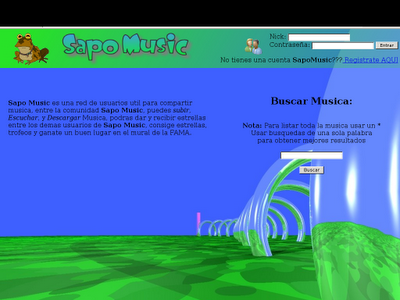 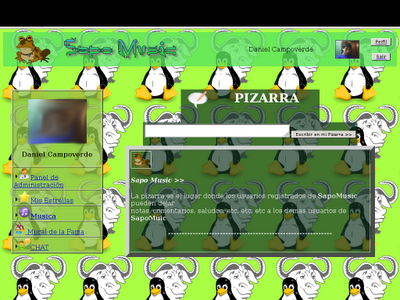  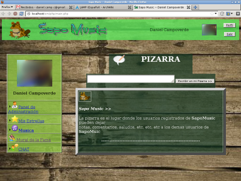
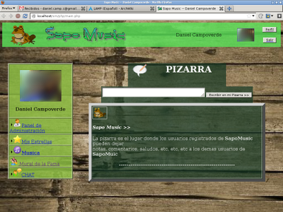  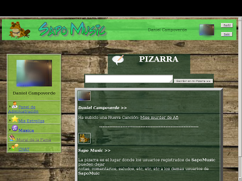 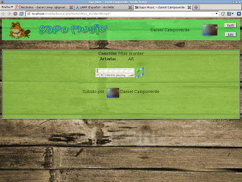 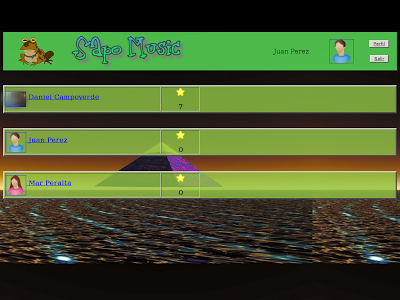
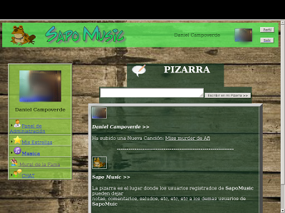 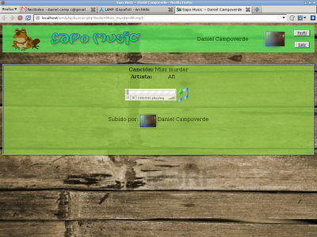 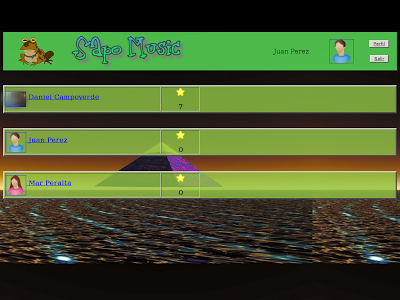 
 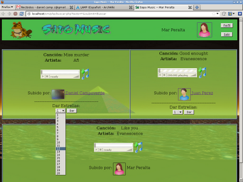
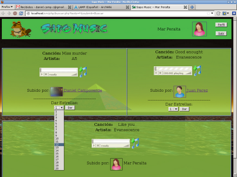